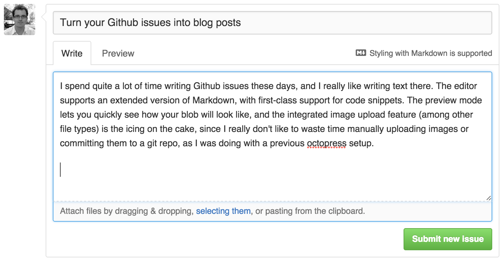

Turn your Github issues into blog posts
Introducing Ebarnouflant: Write a Github issue, add the published label and close the issue when you're finished. Done, it's published.
Motivation
I spend quite a lot of time writing Github issues these days, and I really like writing text there. The editor supports an extended version of Markdown, with first-class support for code snippets. The preview mode lets you quickly see how your blob will look like, and the integrated image upload feature (among other file types) is the icing on the cake, since it makes adding images to your posts much easier than, say, with a stock octopress blog.

Ebarnouflant is the name of this blog, and is also the name of the really small Rails app that powers that blog.
How it works
Ebarnouflant just maps an issue number (the :id in /posts/:id-title) to a blog post, using the Github Issues API to retrieve the issue details, and the Github Markdown API to transform the markdown content into HTML. No database involved whatsoever!
So it's basically a thin wrapper on top of the Github API, with a sprinkle of caching to make sure we don't need to hit Github every time a user visits your blog. It works (and handles load spikes) great on a free Heroku dyno with the free memcached addon (but you could use the default Rails file-based caching system and it would work great as well).
Originally I wanted to use a Github webhook that listens for issue events for creating and updating blog posts, but unfortunately Github does not trigger an event when the issue is updated, so we're forced to do some intelligent polling instead.
Try it!
Interested? Try it out already by hitting http://your-org.your-repo.ebarnouflant.com!
For instance this very same repo (crohr/ebarnouflant) can be seen at http://crohr.ebarnouflant.ebarnouflant.com. And this very same blog post actually originates from https://github.com/crohr/ebarnouflant/issues/4. So create a new issue in one of your repos, add a published label and then close it to publish it.
Another example would be http://crohr.test-ebarnouflant.ebarnouflant.com/.